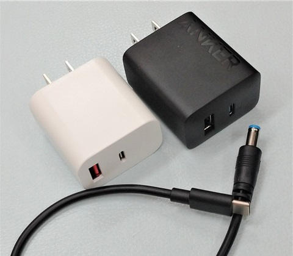
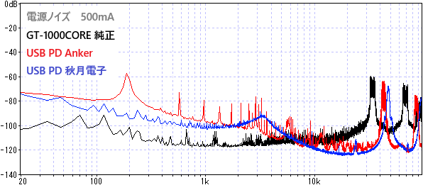
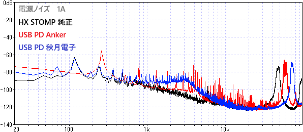
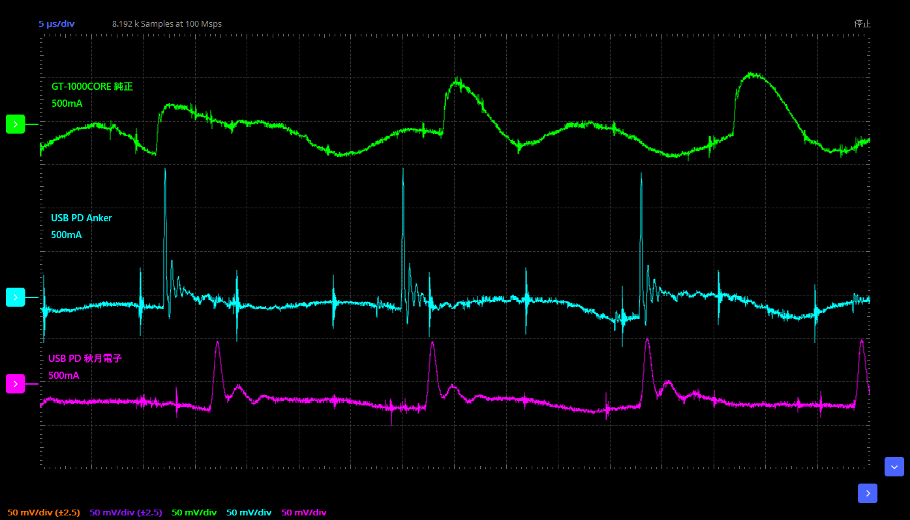
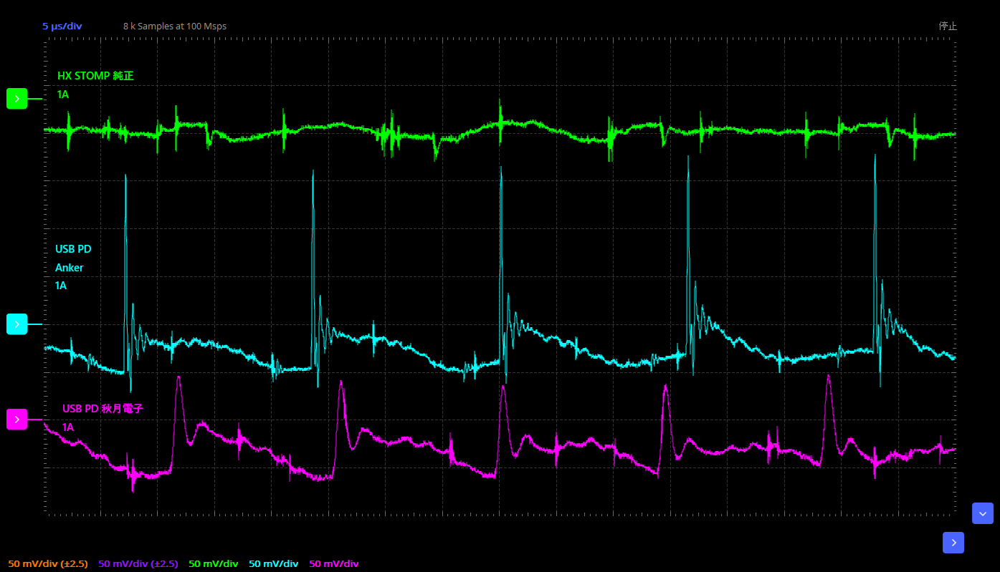
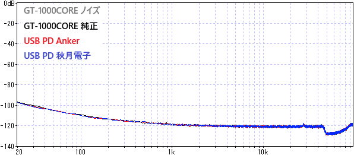
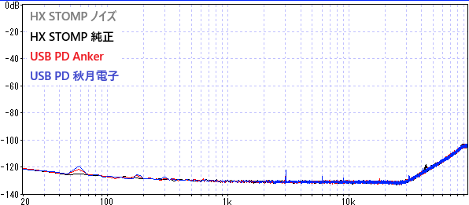

USB PDでGT-1000COREとHX STOMPを動かす
2024年07月29日 カテゴリー：実験等

USB Power Delivery（以下USB PD）のACアダプターからBOSS GT-1000COREやLINE 6 HX STOMPへ電源供給し、問題がないかどうか検証します。今回使用したものは以下の通りです。
・GT-1000CORE 純正ACアダプター PSB-1U
・HX STOMP 純正ACアダプター NSA27EP-090300
・Anker Charger (20W, 2-Port)
・秋月電子 スイッチングACアダプター(USB ACアダプター) PD20W Type-A/Type-C
・USB Type-C PDトリガーケーブル センターマイナス PDC-09VM
・2.5mmプラグ⇔2.1mmジャック DC変換ケーブル（HX STOMP用）
【電圧・電流測定】
- GT-1000CORE
純正：9.26V 376mA Anker：8.96V 426mA 秋月：9.18V 421mA
- HX STOMP
純正：9.03V 923mA Anker：8.95V 908mA 秋月：9.17V 904mA
【ノイズ測定】
- それぞれの電源を直接オーディオインターフェイスに接続

- オシロスコープ（ADALM2000）で計測した波形

- それぞれの電源を用いて動作させた場合のGT-1000CORE／HX STOMPの出力からのノイズ
